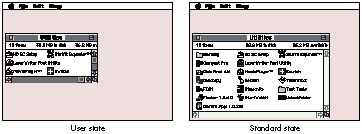
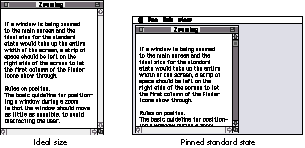
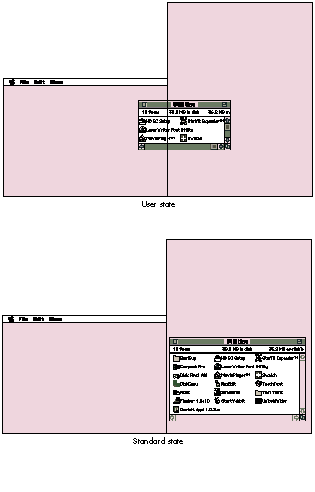
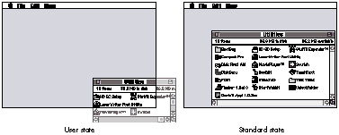

Window zooming is a feature of the Macintosh user interface that's rarely implemented
correctly. Because a lot of calculation and pixel-tweaking is required toachieve the
"perfect" window zoom, few applications go through the effort to properlyzoom their
document windows. This article discusses proper zooming etiquette andprovides a
routine that deals with all the details of zooming windows.
About once a year, I go on a tirade about how few programs zoom their windows
properly. Most programs zoom to the full size of the main screen; other applications
make the window only as big as they need to but still move it to the main screen, even
if the window is on another screen. The System 7 Finder comes close to making me
happy, but every once in a while it zips a window to the main screen for reasons
known only to the Finder engineers.
As I was writing some application code recently, I took the opportunity to make it zoom
windows the way I wish all other programs would zoom windows. The resulting code
(which is on this issue's CD) is the basis for this article. The zooming behavior that
this code implements reflects all the documentation Apple has ever published about
window zooming, from the old Human Interface notes to the Window Manager chapter
inInside Macintosh: Macintosh Toolbox Essentials .
First let's look at the subtle effects of a user's actions on how a window should be
zoomed. After some basic definitions, we'll go over a few rules that govern zooming
behavior. If you couldn't care less about these preliminaries, you can skip to the
section "The Zooming Code" (however, if you do this, you'll hurt the author's feelings,
since he spent a perfect Saturday afternoon indoors to write this article).
THE STATES OF A WINDOW
A window is zoomed between two states, theuser state and the standard state . The user
state is any size and position in which the user can place the window on the desktop.
The Window Manager updates the user state when it calls a WDEF to recalculate a
window's regions.
The standard state of a window is defined to be the size that can best display the data
contained in the window. For example, in word processing applications the standard
state of a document window would most likely be the size of a printed page. For some
types of windows the standard state depends on the window's contents and so is
determined dynamically by the application when the user zooms the window. In the
Finder, for instance, the standard state of a window in an icon view would be the
smallest size that can display all the icons in that window. The position of a window in
its standard state varies depending on the position of the user state when the window
was zoomed and on other factors, as explained later.
Figure 1 shows the user state and standard state of a Finder window displayed in the
"small icon" view.

Figure 1 The User and Standard States of a Window
RULES OF THE ROAD
In addition, there are a few rules that govern how a window should be zoomed in
different situations. These rules can be divided into two categories: rules on size and
rules on position.
Rules on size. Although the standard state of a window is defined to be the best size
for displaying the window's contents, this state is actually constrained by the size of
the screen to which the window is being zoomed. If the ideal size for the standard state
is larger than the destination screen, the window should be pinned to the size of the
screen, minus some slop pixels. For example, Figure 2 shows the height of the
standard state being pinned on the main screen. (Note that space was also left for the
menu bar.)
If a window is being zoomed to the main screen and the ideal size for the standard state
would take up the entire width of the screen, a strip of space should be left on the right
side of the screen to let the first column of Finder icons show through.

Figure 2 Pinning to the Screen Size
Rules on position. The basic guideline for positioning a window during a zoom is
that the window should move as little as possible, to avoid distracting the user.
A window in its standard state should be positioned so that it's entirely on one screen.
If a window straddles more than one screen in the user state and is subsequently
zoomed to the standard state, it should be zoomed to the screen that contains the largest
portion of the window's content region. (See Figure 3.)When a window is zoomed
from the user state to the standard state, it should be anchored at its current top left
corner if possible. If the standard state size will fit on the screen without moving the
window, the window can simply be resized. If the standard state of the window cannot
fit with the top left corner anchored, the window should be "nudged" so that the parts
that were off the screen fall just on screen. (See Figure 4.)
This section goes through the window zooming code chunk by chunk, discussing the
logic behind each step.
ZoomTheWindow is the entry point to the window zooming code. It determines the best
screen to zoom the window to, and nudges the window into position in case part of it
falls off the edge of the screen. Applications should call this routine instead of calling
the Toolbox routine ZoomWindow directly.

Figure 3Zooming to the Best Screen

Figure 4 Nudge Zooming
ZoomTheWindow has the following prototype:
void ZoomTheWindow(WindowPeek theWindow, short zoomState,
CalcIdealDocumentSizeProcPtr calcRoutine);
The first two parameters, theWindow and zoomState, are identical to the first two
parameters of ZoomWindow. The last parameter, calcRoutine, is an
application-supplied callback routine that calculates the ideal size for the window
without taking the user's screen configuration into consideration. The prototype of the
CalcIdealDocumentSizeProcPtr function type is as follows:
typedef void (*CalcIdealDocumentSizeProcPtr)
(WindowPtr theWindow, Rect *idealContentSize);
Given the window to be zoomed, the callback routine returns (in local coordinates) the
ideal rectangle for the window in the idealContentSize parameter. The window will be
the current graphics port when the callback routine is invoked.
ZoomTheWindow calls two utility routines, CalculateWindowAreaOnScreen and
CalculateOffsetAmount. CalculateWindowAreaOnScreen calculates the area of a window
on a screen. The screen that contains the largest portion of the window is the screen
that the window will be zoomed to. If ZoomTheWindow determines that anchoring the
window at its current top left corner will result in part of the window lying off the
screen, it calls CalculateOffsetAmount to find out how many pixels the window needs to
be nudged so that it's entirely on the screen. These utility routines are described in
detail following the discussion of ZoomTheWindow below.
THE ZOOMDATA STRUCTURE
The ZoomData structure is used by ZoomTheWindow to hold information about the
screen the window should be zoomed to. ZoomTheWindow uses DeviceLoop to find the
screen containing the largest portion of the window. The DeviceLoop drawing procedure
updates the ZoomData structure as DeviceLoop calls it for each active screen device.
struct ZoomData {
GDHandle screenWithLargestPartOfWindow;
unsigned long largestArea;
Rect windowBounds;
};
typedef struct ZoomData ZoomData, *ZoomDataPtr;
The screenWithLargestPartOfWindow field is a handle to the screen device that the
window should be zoomed to. The largestArea field holds the area of the largest portion
of the window encounteredso far, as DeviceLoop iterates through the screens. The
windowBounds field is the portion of the window that's currently visible on the
desktop.
THE ZOOMTHEWINDOW ROUTINE
About 90% of the code in ZoomTheWindow executes only when the window is to be
zoomed to the standard state. The routine starts by setting up the current graphics port
and getting some frequently used fields out of the window record.
void ZoomTheWindow(WindowPeek theWindow, short zoomState,
CalcIdealDocumentSizeProcPtr calcRoutine)
{
ZoomData zoomData;
Rect newStandardRect, scratchRect, screenRect, portRect;
Rect contentRegionBoundingBox, structureRegionBoundingBox;
Rect deviceLoopRect;
GrafPtr currentPort;
RgnHandle scratchRegion, contentRegion, structureRegion;
GDHandle mainDevice;
short horizontalAmountOffScreen, verticalAmountOffScreen;
short windowFrameTopSize, windowFrameLeftSize;
short windowFrameRightSize, windowFrameBottomSize;
GetPort(¤tPort);
SetPort((WindowPtr) theWindow);
contentRegion = GetWindowContentRegion(theWindow);
structureRegion = GetWindowStructureRegion(theWindow);
GetWindowPortRect(theWindow, &portRect);
contentRegionBoundingBox = (**contentRegion).rgnBBox;
structureRegionBoundingBox = (**structureRegion).rgnBBox;
windowFrameTopSize = contentRegionBoundingBox.top -
structureRegionBoundingBox.top;
windowFrameLeftSize = contentRegionBoundingBox.left -
structureRegionBoundingBox.left;
windowFrameRightSize = structureRegionBoundingBox.right -
contentRegionBoundingBox.right;
windowFrameBottomSize = structureRegionBoundingBox.bottom -
contentRegionBoundingBox.bottom;
Determining the proper screen. The code then determines which screen contains
the largest portion of the window, as follows:
// If the window is being zoomed to the standard state, calculate the
// best size to display the window's information.
mainDevice = GetMainDevice();
if (zoomState == inZoomOut) {
zoomData.screenWithLargestPartOfWindow = mainDevice;
zoomData.largestArea = 0;
// Get the portion of the window that's on the desktop.
scratchRegion = NewRgn();
SectRgn(GetGrayRgn(), contentRegion, scratchRegion);
if (EmptyRgn(scratchRegion))
zoomData.windowBounds = structureRegionBoundingBox;
else
zoomData.windowBounds = contentRegionBoundingBox;
// Use DeviceLoop to walk through all the active screens to find
// the one with the largest portion of the zoomed window.
deviceLoopRect = zoomData.windowBounds;
GlobalToLocal((Point *)&deviceLoopRect);
GlobalToLocal((Point *)&deviceLoopRect.bottom);
RectRgn(scratchRegion, &deviceLoopRect);
DeviceLoop(scratchRegion, &CalcWindowAreaOnScreen,
(long) &zoomData, (DeviceLoopFlags) singleDevices);
DisposeRgn(scratchRegion);
screenRect = (**(zoomData.screenWithLargestPartOfWindow)).gdRect;
// If the window will be zoomed to the main screen, change the
// top of the usable screen area so that the window's title bar
// won't be placed under the menu bar.
if (zoomData.screenWithLargestPartOfWindow == mainDevice)
screenRect.top += GetMBarHeight();
ZoomTheWindow sets up default values in the ZoomData structure so that the window
will zoom to the main screen by default. Normally, the content area of the window is
used to determine the area of the window that's on each screen. However, if the user
has the window positioned such that only the title bar (or a portion of the title bar) is
visible on the desktop, the structure region of the window is used to determine the
screen that contains the largest portion of the title bar.
One of the little-known facts about the universe is that inspiration actually comes
from subatomic particles flying around in deep space. These particles occasionally hit
a sentient brain, resulting in a flash of inspiration. One of these events resulted in the
use of DeviceLoop to iterate through the list of active screen devices. (Of course, this
means that the zooming code requires System 7; for a System 6 alternative to
DeviceLoop, see "Graphical Truffles: Multiple Screens Revealed" indevelop Issue 10.)
The CalcWindowAreaOnScreen routine is the DeviceLoop drawing procedure. The
ZoomData structure is passed to DeviceLoop as the userData value, and the DeviceLoop
flags are set so that DeviceLoop will call its drawing procedure for each screen device.
Determining the ideal size for the window. After determining the proper
screen to zoom to, the application's callback routine is called to get back the ideal
content size for the window. This rectangle is then anchored at the window's current
top left corner and expanded to include the window frame.
// Figure out the perfect size for the window as if we had an
// infinitely large screen.
(*calcRoutine)((WindowPtr) theWindow, &newStandardRect);
// Anchor the new rectangle at the current top left corner of the
// window.
OffsetRect(&newStandardRect, -newStandardRect.left,
-newStandardRect.top);
OffsetRect(&newStandardRect, contentRegionBoundingBox.left,
contentRegionBoundingBox.top);
// Add the window frame to the ideal content rect.
newStandardRect.top -= windowFrameTopSize;
newStandardRect.left -= windowFrameLeftSize;
newStandardRect.right += windowFrameRightSize;
newStandardRect.bottom += windowFrameBottomSize;
Fitting the ideal size onto the screen. This is the tedious part of the code. At
this point, newStandardRect holds the ideal size for the window being zoomed. Since a
window in its standard state must be entirely on one screen, we ensure that the window
fits on the screen, maintaining its ideal size if possible.
// If the new rectangle falls off the edge of the screen, nudge it
// so that it's just on the screen. CalculateOffsetAmount
// determines how much of the window is off the screen.
SectRect(&newStandardRect, &screenRect, &scratchRect);
if (!EqualRect(&newStandardRect, &scratchRect)) {
horizontalAmountOffScreen = CalculateOffsetAmount(
newStandardRect.left,
newStandardRect.right,
scratchRect.left, scratchRect.right,
screenRect.left, screenRect.right);
verticalAmountOffScreen = CalculateOffsetAmount(
newStandardRect.top,
newStandardRect.bottom,
scratchRect.top, scratchRect.bottom,
screenRect.top, screenRect.bottom);
OffsetRect(&newStandardRect, horizontalAmountOffScreen,
verticalAmountOffScreen);
}
// If we're still falling off the edge of the screen, the perfect
// size is larger than the screen, so shrink the standard size.
SectRect(&newStandardRect, &screenRect, &scratchRect);
if (!EqualRect(&newStandardRect, &scratchRect)) {
// First shrink the width. If the window is wider than the screen
// it's being zoomed to, just pin the standard rectangle to the
// edges of the screen, leaving some slop; otherwise, we know we
// just nudged the window into position, so do nothing.
if ((newStandardRect.right - newStandardRect.left) >
(screenRect.right - screenRect.left)) {
newStandardRect.left = screenRect.left + kNudgeSlop;
newStandardRect.right = screenRect.right - kNudgeSlop;
if ((zoomData.screenWithLargestPartOfWindow ==
mainDevice) &&
(newStandardRect.right >
(screenRect.right - kIconSpace)))
newStandardRect.right =
screenRect.right - kIconSpace;
}
// Move in the top of the window. As with the width of the
// window, do nothing unless the window is taller than the
// height of the screen.
if ((newStandardRect.bottom - newStandardRect.top) >
(screenRect.bottom - screenRect.top)) {
newStandardRect.top = screenRect.top + kNudgeSlop;
newStandardRect.bottom = screenRect.bottom - kNudgeSlop;
}
}
// We've got the best possible window position. Remove the
// frame, slam it into the WStateData record and let ZoomWindow
// take care of the rest.
newStandardRect.top += windowFrameTopSize;
newStandardRect.left += windowFrameLeftSize;
newStandardRect.right -= windowFrameRightSize;
newStandardRect.bottom -= windowFrameBottomSize;
SetWindowStandardState(theWindow, &newStandardRect);
} // if (zoomState == inZoomOut)
else
GetWindowUserState(theWindow, &newStandardRect);
We call CalculateOffsetAmount to determine how much to nudge the window if it falls
off the edge of the screen in its ideal size. After nudging the window, we double check to
see if the window is entirely on the screen. If it still isn't, that means that the ideal
size of the window is larger than the screen that it's zooming to, so the window has to
be shrunk to fit on the screen. The code shrinks the window so that there's a small area
of slop space between the edge of the window and the screen boundary. Additionally, if
the screen that the window is zooming to is the main screen, space is left for the menu
bar and a column of Finder icons. After all that, newStandardRect contains the best
size for the window for that screen. After we remove the window frame, the stdState
field of the WStateData record can be filled with this rectangle.
There's also the simple case of zooming to the user state. Since the Window Manager
takes care of keeping the userState field of the WStateData record up to date, that
rectangle is easy to get.
Zooming the window. Finally, all that's left to do is to actually zoom the window.
One final optimization that can be performed is that if the top left corner of the window
hasn't moved, SizeWindow can be called instead of ZoomWindow, reducing the amount
of redrawing that needs to be done. The window's clipping region is reset to be the size
of the window to ensure that the window's contents are entirely erased before
ZoomWindow is called.
// If the window is still anchored at the current top left corner,
// just resize it.
if ((newStandardRect.left == contentRegionBoundingBox.left) &&
(newStandardRect.top == contentRegionBoundingBox.top)) {
OffsetRect(&newStandardRect, -newStandardRect.left,
-newStandardRect.top);
SizeWindow((WindowPtr) theWindow, newStandardRect.right,
newStandardRect.bottom, true);
}
else {
scratchRegion = NewRgn();
GetClip(scratchRegion);
ClipRect(&portRect);
EraseRect(&portRect);
ZoomWindow((WindowPtr) theWindow, zoomState, false);
SetClip(scratchRegion);
DisposeRgn(scratchRegion);
}
SetPort(currentPort);
}
THE CALCWINDOWAREAONSCREEN ROUTINE
CalcWindowAreaOnScreen, the DeviceLoop drawing procedure for the zooming code,
doesn't actually do any drawing, but instead simply calculates the area of the window
that's on a screen. If there's more content area on one screen than any of the other
screens that have been encountered so far, CalcWindowAreaOnScreen saves the
GDHandle of this screen in the ZoomData structure as the potential screen to zoom the
window to.
pascal void CalcWindowAreaOnScreen(short depth, short deviceFlags,
GDHandle targetDevice, long userData)
{
#pragma unused (depth, deviceFlags)
ZoomDataPtr zoomData = (ZoomDataPtr) userData;
unsigned long windowAreaOnScreen;
Rect windowPortionOnScreen;
// Find the rectangle that encloses the intersection of the
// screen and the document window.
SectRect(&(zoomData->windowBounds), &((**targetDevice).gdRect),
&windowPortionOnScreen);
// Offset this rectangle so that its right and bottom are also
// its width and height.
OffsetRect(&windowPortionOnScreen, -windowPortionOnScreen.left,
-windowPortionOnScreen.top);
// Calculate the area of the part of the window that is on this
// screen.
windowAreaOnScreen = windowPortionOnScreen.right *
windowPortionOnScreen.bottom;
// If this is the largest area that has been encountered so far,
// remember this screen as the potential screen to zoom to.
if (windowAreaOnScreen > zoomData->largestArea) {
zoomData->largestArea = windowAreaOnScreen;
zoomData->screenWithLargestPartOfWindow = targetDevice;
}
}
THE CALCULATEOFFSETAMOUNT ROUTINE
The zooming code calls the CalculateOffsetAmount routine to calculate the number of
pixels the window needs to be nudged to be entirely on the screen. This routine works
in one dimension at a time, so ZoomTheWindow calls it twice, once for the width of a
window and once for the window's height. If CalculateOffsetAmount determines that the
window is larger than the screen, it returns 0 for the offset, since the window will be
resized later.
short CalculateOffsetAmount(short idealStartPoint,
short idealEndPoint, short idealOnScreenStartPoint,
short idealOnScreenEndPoint, short screenEdge1,
short screenEdge2)
{
short offsetAmount;
// Check to see if the window fits on the screen in this
// dimension.
if ((idealStartPoint < screenEdge1) &&
(idealEndPoint > screenEdge2))
offsetAmount = 0;
else {
// Find out how much of the window lies off this screen by
// subtracting the amount of the window that's on the screen
// from the size of the entire window in this dimension. If
// the window is completely off-screen, offset the window so
// that it's placed just on the screen.
if ((idealOnScreenStartPoint - idealOnScreenEndPoint) == 0) {
// See if the window is lying to the left or above the
// screen.
if (idealEndPoint < screenEdge1)
offsetAmount =
screenEdge1 - idealStartPoint + kNudgeSlop;
else
// Otherwise, it's below or to the right of the
// screen.
offsetAmount =
screenEdge2 - idealEndPoint - kNudgeSlop;
}
else {
offsetAmount = (idealEndPoint - idealStartPoint) -
(idealOnScreenEndPoint -
idealOnScreenStartPoint);
// If we're nudging, add slop pixels.
if (offsetAmount != 0)
offsetAmount += kNudgeSlop;
// Check to see which side of the screen the window was
// fallingoff of, so that it can be nudged in the
// opposite direction.
if (idealEndPoint > screenEdge2)
offsetAmount = -offsetAmount;
}
}
return offsetAmount;
}
CalculateOffsetAmount determines the nudge amount by calculating the amount of
overlap of two line segments. The first line segment, described by the idealStartPoint
and idealEndPoint parameters, is the width or height of the window being zoomed. The
second line segment, described by the idealOnScreenStartPoint and
idealOnScreenEndPoint parameters, is the part of the window's width or height that is
on the screen the window will be zoomed to. The number of pixels the window will be
nudged is the difference between the lengths of these two line segments, plus some slop.
If the length of the second line segment is 0, the window is entirely off the screen that
it will be zoomed to. In this case, CalculateOffsetAmount will return the number of
pixels the window will have to be nudged to be just on the screen. A third line segment,
describing the screen width or height, is used to check whether the window is larger
than the screen and to determine the direction to nudge the window.
The code presented in this article takes care of most of the work of zooming windows.
All your application needs to do is supply the code that determines the ideal size for
your windows. Hopefully, many more applications will implement proper zooming
behavior in the near future. This will make the people in the offices around me
especially happy, since it's one less thing I'll have to complain about.
A lot of people think the Window Manager has some magic value stashed away in a
dark corner that tells it whether a window is in its user state or its standard state. In
reality, it's not that sophisticated. It's actually the WDEF that does all the work, since
it's the thing that really needs to know which state a window is in. To make this
decision, the standard document WDEF takes a window's portRect, converts it to global
coordinates, and then compares it with the user and standard state rectangles to
determine which state the window is in. *
If the structure region is always used to calculate the screen containing most of
the window, there's actually a scenario in which the code will zoom to the wrong
screen. If the user has a multiscreen setup and places a window so that it sits across
two screens, with only the title bar showing on one screen but a sliver of the content
region showing on the other, and there's more title bar than content showing, the
window will zoom to the first screen. However, since there is content area on the
second screen, the window should zoom to that screen. *
DEAN YU recently went on a cross-country road trip in his new car. In retrospect,
he decided that the time off wasn't worth the emotional trauma of being pelted by
marble-sized hail in Cheyenne, Wyoming, being salt-blasted in the Utah salt flats,
being nearly blown off the road as an 18-wheeler passed him at 95 miles an hour in
the dead of night, and having his windshield chipped by gravel falling off a dump truck.
Dean didn't even get the satisfaction of finding out exactly how fast he can drive without
getting pulled over for speeding in Nebraska. Sympathy notes and donations for getting
his car repaired can be sent to Dean in care of develop .*
THANKS TO OUR TECHNICAL REVIEWERS C. K. Haun, Elizabeth Moller, Dave
Owens, Craig Prouse *